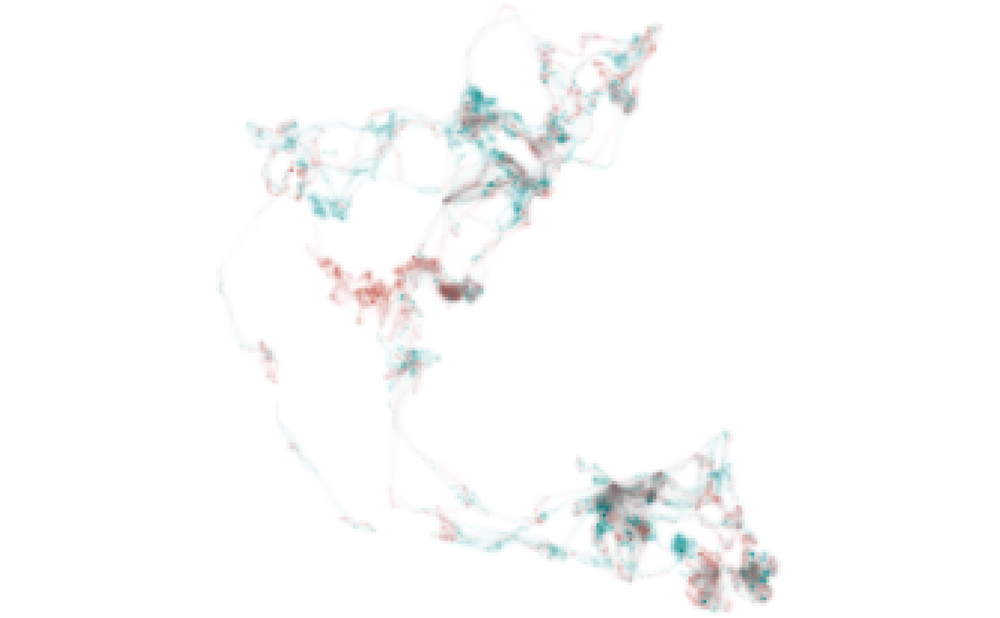

This function enables visualization of distributional information in a single map by combining distribution metrics and an HCL color palette.
map_single(
x,
palette,
layer,
lambda_i = 0,
lambda_s = 0,
return_type = c("plot", "stack", "df")
)RasterStack of distributions processed by metrics_pull() or
metrics_distill().
data frame containing an HCL color palette generated using
palette_timecycle(), palette_timeline(), or palette_set().
integer (or character) corresponding to the layer ID (or name)
of layer. A single distribution from within x is mapped when the layer
argument is specified. The layer argument is ignored if
metrics_distill() was used to generate x.
number that allows visual tuning of intensity values via the
scales::modulus_trans() function (see Details). Negative numbers increase
the opacity of cells with low intensity values. Positive numbers decrease
the opacity of cells with low intensity values.
number that allows visual tuning of specificity values via
the scales::modulus_trans() function (see Details). Negative numbers
increase the chroma of cells with low specificity values. Positive numbers
decrease the chroma of cells with low specificity values.
character specifying whether the function should return a
ggplot2 plot object ("plot"), RasterStack ("stack"), or data frame
("df"). The default is to return a ggplot2 object.
By default, or when return_type = "plot", the function returns a
map that is a ggplot2 plot object.
When return_type = "stack", the function returns a RasterStack
containing five layers that enable RGBa visualization of a map using other R packages or external GIS software:
R: red, integer values (0-255).
G: green, integer values (0-255).
B: blue, integer values (0-255).
alpha: opacity, numeric values (0-255).
n_layers: number of layers in x with non-NA values.
When return_type = "df", the function returns a data frame containing
seven columns:
x,y: coordinates of raster cell centers.
cell_number: integer indicating the cell number within the raster.
intensity: maximum cell value across layers divided by the maximum
value across all layers and cells; mapped to alpha level.
specificity: the degree to which intensity values are unevenly
distributed across layers; mapped to chroma.
layer_id: integer identifying the layer containing the maximum
intensity value; mapped to hue.
color: the hexadecimal color associated with the given layer and
specificity values.
The lambda_i parameter allows for visual tuning of intensity
values with unusual distributions. For example, distributions often
contain highly skewed intensity values because individuals spend a vast
majority of their time within a relatively small area or because
populations are relatively dense during some seasons and relatively
dispersed during others. This can make visualizing distributions a
challenge. The lambda_i parameter transforms intensity values via the
scales::modulus_trans() function, allowing users to adjust the relative
visual weight of high and low intensity values.
The lambda_s parameter allows for visual tuning of specificity
values via the scales::modulus_trans() function. Adjustment of
lambda_s affects the distribution of chroma values across areas of
relatively low and high specificity, thus modifying information available
to viewers. USE WITH CAUTION!
Other map:
map_multiples()
# load elephant data
data("elephant_ud")
# prepare metrics
r <- metrics_distill(elephant_ud)
# generate palette
pal <- palette_set(elephant_ud)
# produce map, adjusting lambda_i to make areas that were used less
# intensively more conspicuous
map_single(r, pal, lambda_i = -5)

# return RasterStack containing RGBa values
m <- map_single(r, pal, lambda_i = -5, return_type = "stack")
# visualize RGBa values
library(raster)
#> Loading required package: sp
plotRGB(m, 1, 2, 3, alpha = as.vector(m[[4]]))
